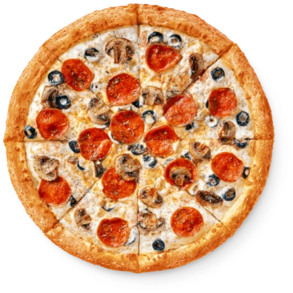
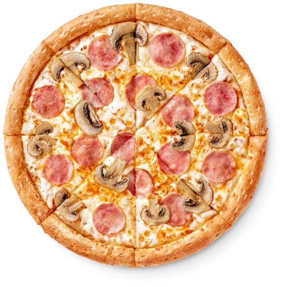

Лучшие и самые настоящие неаполитанские пиццы, приготовленные из ингредиентов
высочайшего качества и выпеченные в дровяной печи. Наше тесто каждый день
готовится с нуля, и мы используем только лучшие итальянские помидоры и моцареллу.
Пиццы
Четыре сезона19 BYNБургер-пицца20 BYNСырный цыплёнок18 BYNЦыплёнок-барбекю22 BYNЦыплёнок-ранч21 BYNДеревенская18 BYNГавайская23 BYNДомашняя19 BYN

Итальянская23 BYNМясная24 BYNВетчина и сыр23 BYNВетчина и огурчики22 BYN

Ветчина и грибы23 BYNПепперони22 BYNЖюльен23 BYN
×
Салаты
Зелёный салат18 BYNОвощной салат с сыром тофу20 BYNСашими салат25 BYN
Десерты
Красный бархат8 BYNЧизкейк7 BYNБанановый чизкейк7 BYN
Напитки
Вода Aqua газ.1.5 BYN0.5 лВода Aqua негаз.1.5 BYN0.5 лЧай чёрный Lipton2 BYN0.5 лЧай зелёный Lipton2 BYN0.5 лСок Апельсиновый4 BYN1 лСок яблочный4 BYN1 лНектар вишнёвый4 BYN1 л